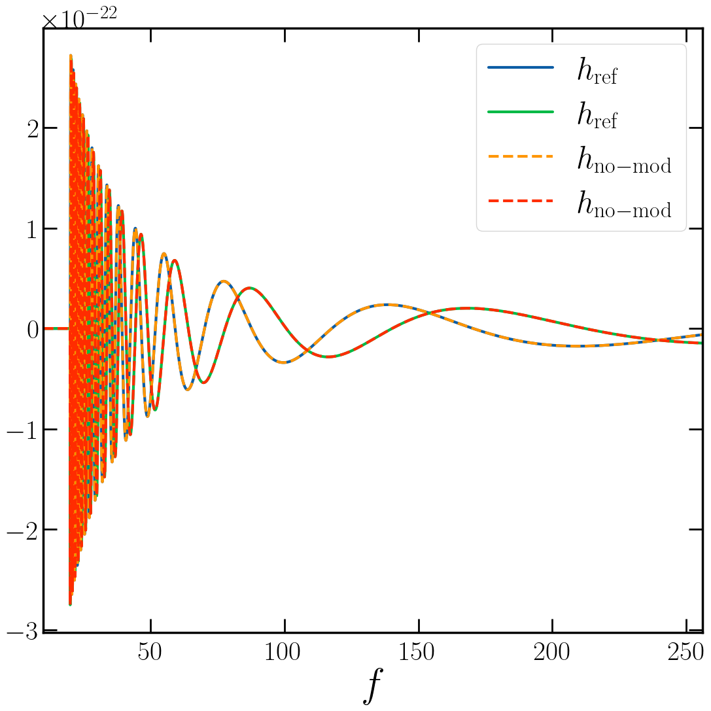
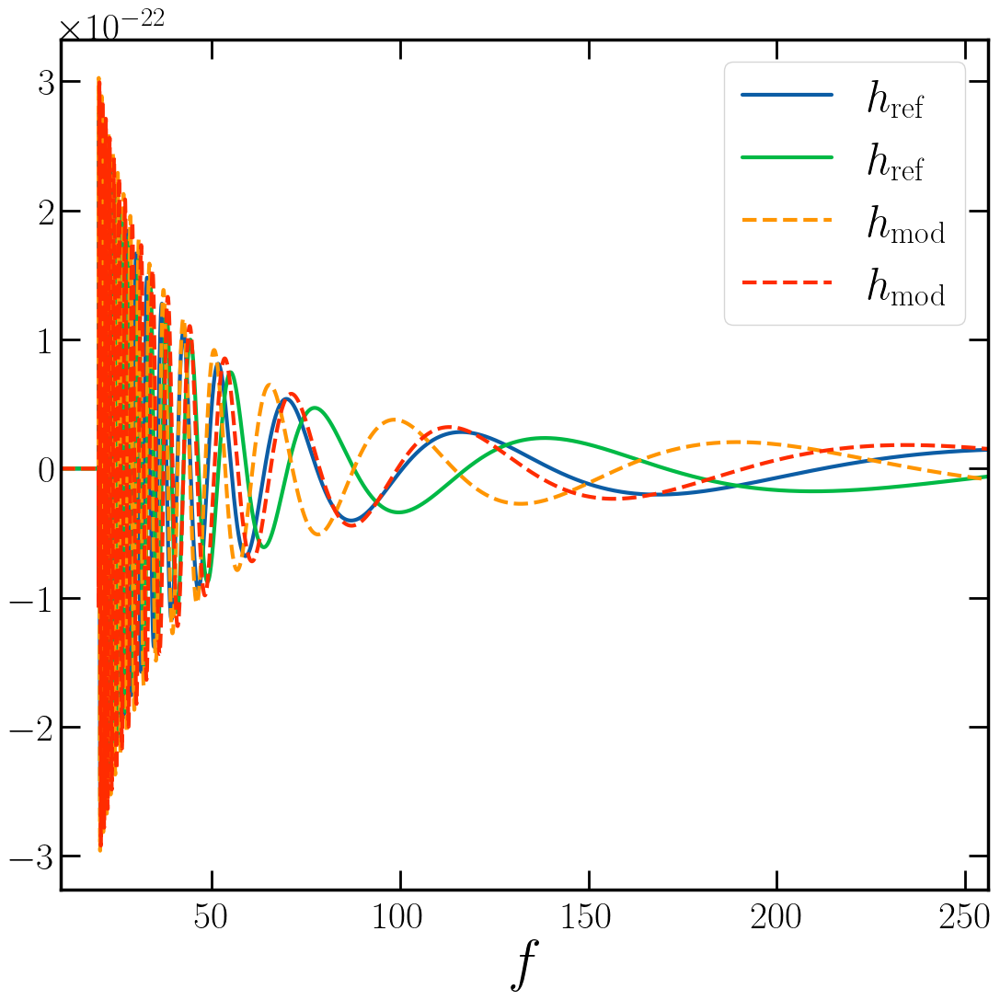

[1]:
import numpy as np
import matplotlib.pyplot as plt
from pycbc.waveform import get_fd_waveform
/home/user/miniconda3/envs/test_install/lib/python3.11/site-packages/pycbc/types/array.py:36: UserWarning: Wswiglal-redir-stdio:
SWIGLAL standard output/error redirection is enabled in IPython.
This may lead to performance penalties. To disable locally, use:
with lal.no_swig_redirect_standard_output_error():
...
To disable globally, use:
lal.swig_redirect_standard_output_error(True)
Note however that this will likely lead to error messages from
LAL functions being either misdirected or lost when called from
Jupyter notebooks.
To suppress this warning, use:
import warnings
warnings.filterwarnings("ignore", "Wswiglal-redir-stdio")
import lal
import lal as _lal
PyCBC.libutils: pkg-config call failed, setting NO_PKGCONFIG=1
[2]:
try:
plt.style.use('plot_stylesheet.sty')
except Exception:
pass
[3]:
wf_params = {
'mass1': 30,
'mass2': 20,
'f_lower': 20,
'f_final': 1024,
'delta_f': 1/64,
'delta_t': 1/2048,
'spin1z': 0,
'spin2z': 0,
'distance': 100,
'inclination': 0.2,
}
Frequency Domain Output
No Modification
Sanity check, should reproduce output of get_fd_waveform
[4]:
hpf_ref, hcf_ref = get_fd_waveform(
approximant='IMRPhenomPv2',
**wf_params,
)
[5]:
wf_no_mod_params = {
'modification_type': 'constant_shift',
'error_in_phase': 'relative',
'delta_amplitude': 0.,
'delta_phase': 0.,
}
hpf_no_mod, hcf_no_mod = get_fd_waveform(
approximant='wferrors',
baseline_approximant='IMRPhenomPv2',
**wf_params,
**wf_no_mod_params,
)
[6]:
hpf_ref.plot(label=r'$h_\mathrm{ref}$')
hpf_no_mod.plot(ls='--', label=r'$h_\mathrm{no-mod}$')
plt.legend()
plt.xlabel(r'$f$')
plt.xlim(10, 256)
plt.show()
hcf_ref.plot(label=r'$h_\mathrm{ref}$')
hcf_no_mod.plot(ls='--', label=r'$h_\mathrm{no-mod}$')
plt.legend()
plt.xlabel(r'$f$')
plt.xlim(10, 256)
plt.show()


Two plots each due to real and imaginary part. All curves agree perfectly.
Constant Errors
[7]:
wf_amp_mod_params = {
'modification_type': 'constant_shift',
'error_in_phase': 'relative',
'delta_amplitude': 0.1,
'delta_phase': 0.,
}
hpf_amp_mod, hcf_amp_mod = get_fd_waveform(
approximant='wferrors',
baseline_approximant='IMRPhenomPv2',
**wf_params,
**wf_amp_mod_params,
)
[8]:
hpf_ref.plot(label=r'$h_\mathrm{ref}$')
hpf_amp_mod.plot(ls='--', label=r'$h_\mathrm{amp-mod}$')
plt.legend()
plt.xlabel(r'$f$')
plt.xlim(10, 256)
plt.show()

[9]:
wf_phase_mod_params = {
'modification_type': 'constant_shift',
'error_in_phase': 'relative',
'delta_amplitude': 0.,
'delta_phase': 0.1,
}
hpf_phase_mod, hcf_phase_mod = get_fd_waveform(
approximant='wferrors',
baseline_approximant='IMRPhenomPv2',
**wf_params,
**wf_phase_mod_params,
)
[10]:
hpf_ref.plot(label=r'$h_\mathrm{ref}$')
hpf_phase_mod.plot(ls='--', label=r'$h_\mathrm{phase-mod}$')
plt.legend()
plt.xlabel(r'$f$')
plt.xlim(10, 256)
plt.show()

[11]:
wf_mod_params = {
'modification_type': 'constant_shift',
'error_in_phase': 'relative',
'delta_amplitude': 0.1,
'delta_phase': 0.1,
}
hpf_mod, hcf_mod = get_fd_waveform(
approximant='wferrors',
baseline_approximant='IMRPhenomPv2',
**wf_params,
**wf_mod_params,
)
[12]:
hpf_ref.plot(label=r'$h_\mathrm{ref}$')
hpf_mod.plot(ls='--', label=r'$h_\mathrm{mod}$')
plt.legend()
plt.xlabel(r'$f$')
plt.xlim(10, 256)
plt.show()

Cubic Spline Errors
[13]:
f_low_calibration = wf_params['f_lower']
f_high_calibration = wf_params['f_final']
n_wf_nodal_points = 10
wf_nodal_points = np.logspace(np.log10(f_low_calibration), np.log10(f_high_calibration), n_wf_nodal_points)
ampl_mean_err = 0.1
ampl_stddev_err = 0.05
phase_mean_err = 0.1
phase_stddev_err = 0.05
np.random.seed(42)
delta_amplitude_arr = np.random.standard_normal(n_wf_nodal_points)*ampl_stddev_err + ampl_mean_err
delta_phase_arr = np.random.standard_normal(n_wf_nodal_points)*phase_stddev_err + phase_mean_err
wf_mod_spline_params = {
'modification_type': 'cubic_spline',
'error_in_phase': 'relative',
'delta_amplitude': delta_amplitude_arr,
'delta_phase': delta_phase_arr,
'nodal_points': wf_nodal_points,
}
hpf_mod_spline, hcf_mod_spline = get_fd_waveform(
approximant='wferrors',
baseline_approximant='IMRPhenomPv2',
**wf_params,
**wf_mod_spline_params,
)
[14]:
from scipy.interpolate import CubicSpline
delta_amplitude_interp = CubicSpline(wf_nodal_points, delta_amplitude_arr)
delta_phase_interp = CubicSpline(wf_nodal_points, delta_phase_arr)
plot_points = np.linspace(f_low_calibration, f_high_calibration, num=200)
plt.plot(plot_points, delta_amplitude_interp(plot_points), label='Interpolating Spline')
plt.plot(wf_nodal_points, delta_amplitude_arr, 'X', label='Nodal Points')
plt.legend()
plt.xlabel(r'$f$')
plt.ylabel(r'$\delta \tilde{A}$')
plt.show()
plt.plot(plot_points, delta_phase_interp(plot_points), label='Interpolating Spline')
plt.plot(wf_nodal_points, delta_phase_arr, 'X', label='Nodal Points')
plt.legend()
plt.xlabel(r'$f$')
plt.ylabel(r'$\delta \tilde{\phi}$')
plt.show()


[15]:
hpf_ref.plot(label=r'$h_\mathrm{ref}$')
hpf_mod_spline.plot(ls='--', label=r'$h_\mathrm{mod-spline}$')
plt.legend()
plt.xlabel(r'$f$')
plt.xlim(10, 256)
plt.show()

Detector Strain
While calling get_fd_det_waveform is currently not supported, we can make use of the capability to generate the GW polarization and perform the detector projection manually.
[16]:
t_ref = 0
extr_params = dict(
ra=1.2,
dec=0.6,
polarization=0.8,
t_ref=t_ref,
)
[17]:
from pycbc.detector import Detector
hanford = Detector(
'H1',
reference_time=t_ref,
)
[18]:
fp, fc = hanford.antenna_pattern(
right_ascension=extr_params['ra'],
declination=extr_params['dec'],
polarization=extr_params['polarization'],
t_gps=hanford.reference_time,
# t_gps=float(t_ref),
)
hf_ref = fp*hpf_ref + fc*hcf_ref
hf_mod_spline = fp*hpf_mod_spline + fc*hcf_mod_spline
# from pycbc.waveform import apply_fseries_time_shift
# hf_ref = apply_fseries_time_shift(hf_ref, dt)
[19]:
hf_ref.plot(label=r'$h_\mathrm{ref}$')
hf_mod_spline.plot(ls='--', label=r'$h_\mathrm{mod-spline}$')
plt.legend()
plt.xlabel(r'$f$')
plt.xlim(10, 256)
plt.show()